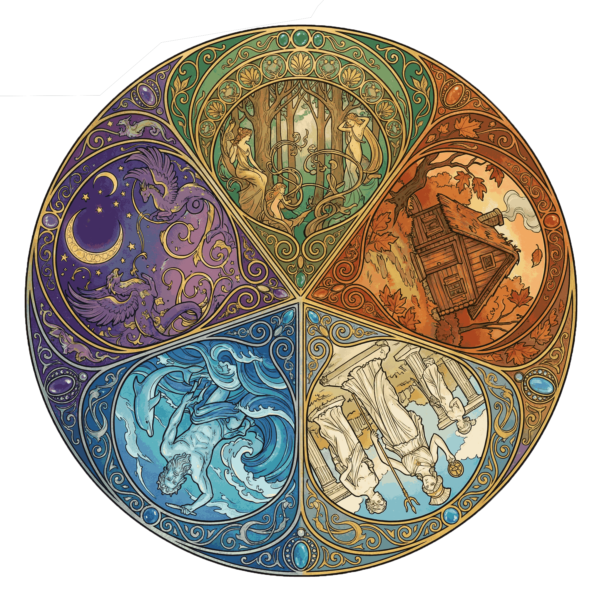

内在女神原型测试
The Goddess Within
在你的心底，住着一位古老的女神。她不一定会被清晰地看见，却在悄悄影响着你的直觉、选择、关系模式、情绪反应——甚至决定你“为什么是现在的你”。
这份女神原型测试并不是为了把你“分成哪一类”，而是为了启动你内在的神性力量。
让我们一起穿越这段象征性的旅程：森林、小屋、月光、风、火焰、影子……它们会引导你触碰自己最深处的性格原型。
请凭第一直觉作答。
答案没有好坏，只是指向你灵魂的方向。
现在，放松下来，让你的内在女神轻轻伸出手。
她正等着你。
